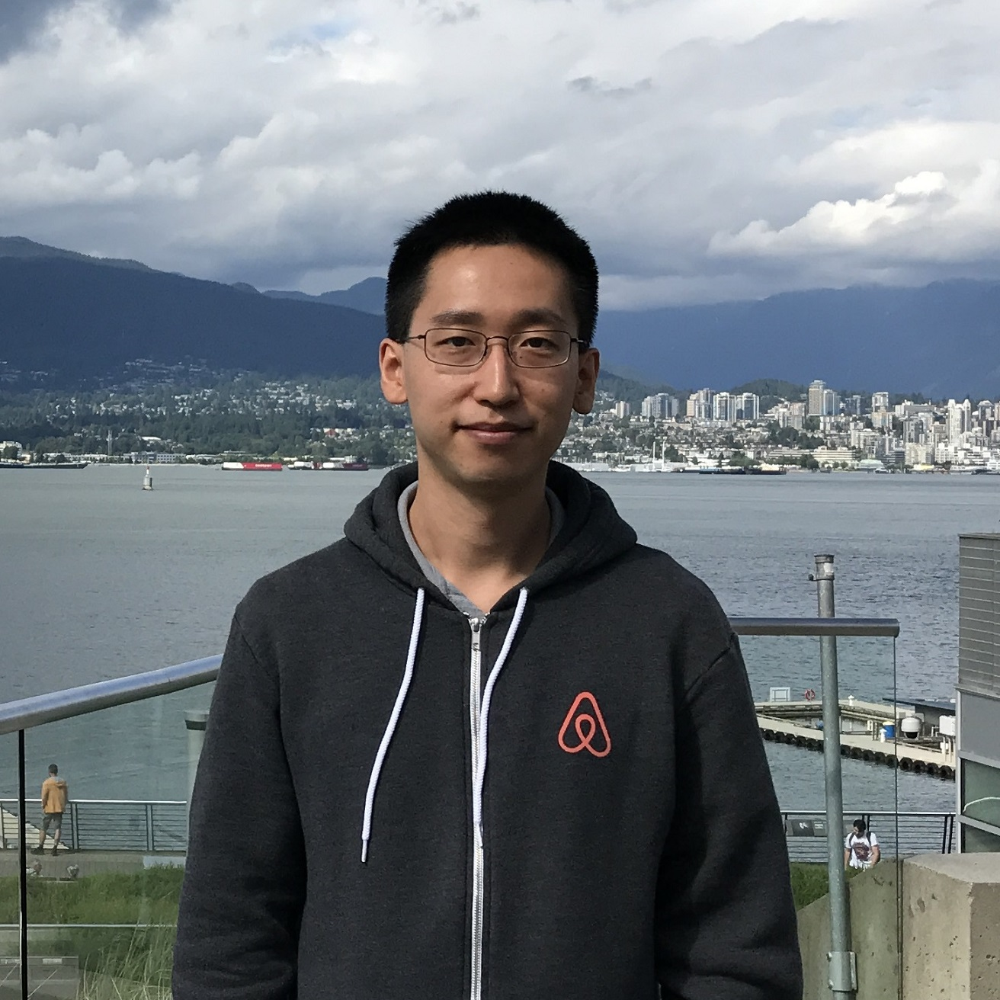

Rob J. Wang

About Me
I am a Data Scientist on the Trust team at Airbnb (San Francisco), where I work on machine learning models for financial fraud detection. Previously, I was also on the Payments team, where I designed and analyzed A/B tests for Guest Commerce.
In September 2017, I received a Ph.D. from the Department of Management Science and Engineering (MS&E) at Stanford University, specializing in Operations Research. My advisor was Prof. Peter W. Glynn, and my thesis was titled Brownian Modeling of Queues: Rates of Convergence to Equilibrium, Departure Variability, and Large Deviations.
Education
- Ph.D. in Management Science and Engineering (Operations Research), Stanford University (2011-2017)
- M.S. in Statistics, Stanford University (2015-2016)
- B.Sc. (Honours) in Mathematics, Queen's University (2007-2011)
Honors
- Natural Sciences and Engineering Research Council of Canada Postgraduate Scholarships (2011-2015)
- Arvanitidis Stanford Graduate Fellowship in Memory of William Linvill (2011-2014)
- Governor General's Academic Medal, Queen's University (2011) and Riverside Secondary School (2007)
Papers
- On the Rate of Convergence to Equilibrium for Two-sided Reflected Brownian Motion and for the Ornstein-Uhlenbeck Process (with Peter W. Glynn)
Minor Revision, Queueing Systems (2018)
- On the Rate of Convergence to Equilibrium for Reflected Brownian Motion (with Peter W. Glynn)
Queueing Systems, Volume 89, Issue 1–2 (2018) p.165-197
- On the Marginal Standard Error Rule and the Testing of Initial Transient Deletion Methods (with Peter W. Glynn)
ACM Transactions on Modeling and Computer Simulation, Vol. 27, No. 1, Article 1, Publication date: August 2016
- Central Limit Theorems and Large Deviations for Additive Functionals of Reflecting Diffusion Processes (with Peter W. Glynn)
Fields Communications Series: Asymptotic Laws and Methods in Stochastics (2015) p.329-345
- Measuring the Initial Transient: Reflected Brownian Motion (with Peter W. Glynn)
Proceedings of the Winter Simulation Conference (2014) p.652-661
- Zeros of Ramanujan Polynomials (with M. Ram Murty and C. Smyth)
J. Ramanujan Math. Soc. 26, No.1 (2011) p.107–125
Working Papers
- A Heavy-traffic Perspective on the BRAVO Effect (with Peter W. Glynn)
|